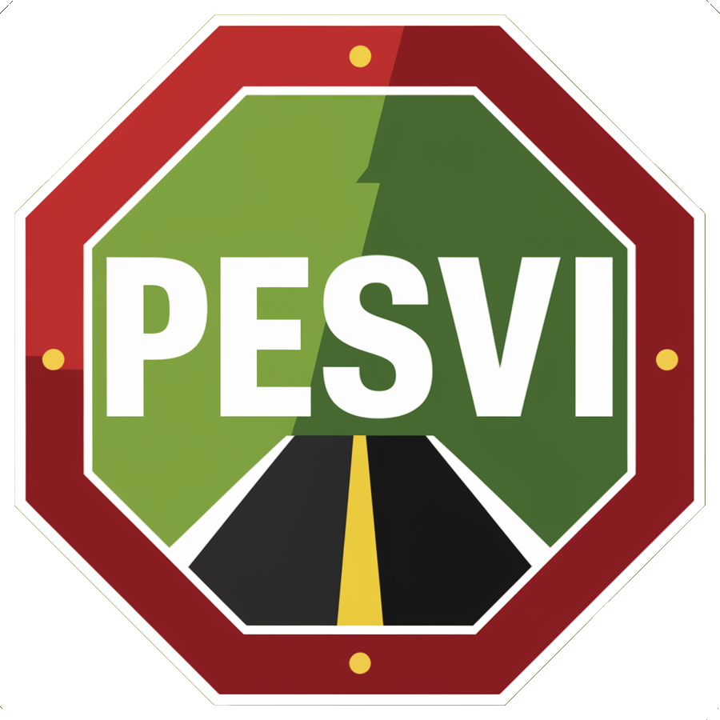

<mat-sidenav-container fullscreen>
  <mat-sidenav #sidenav mode="push" [ngStyle]="{width:'200px'}">
      <mat-toolbar class="custom-yellow-toolbar">
          <span>Menu</span>
          <span class="spacer"></span>
          <button mat-icon-button (click)="sidenav.toggle()">
              <mat-icon>menu</mat-icon>
          </button>
      </mat-toolbar>
      <mat-nav-list>
          <mat-list-item *ngFor="let item of filteredSidebarItems()" [routerLink]="item.url" (click)="sidenav.toggle()">
              <mat-icon>{{item.icon}}</mat-icon>
              {{item.label}}
          </mat-list-item>
      </mat-nav-list>
  </mat-sidenav>
  <mat-toolbar class="custom-green-toolbar">
      <button mat-icon-button (click)="sidenav.toggle()">
          <mat-icon>menu</mat-icon>
      </button>
      <span class="spacer"></span>
      <a style="margin-top: 6px;">
          
      </a>
      <span class="spacer"></span>
      <button mat-button [matMenuTriggerFor]="userMenu">
        {{ user?.name }}
      </button>
      <mat-menu #userMenu="matMenu">
        <button mat-menu-item (click)="onLogout()">Logout</button>
      </mat-menu>
  </mat-toolbar>
  <div class="container p-2">
      <router-outlet></router-outlet>
  </div>
</mat-sidenav-container>
